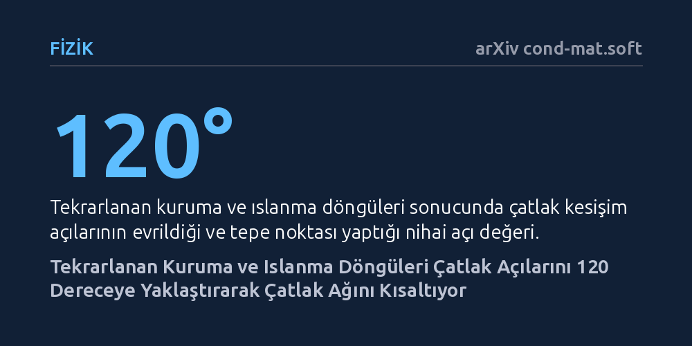

FIZIK · arXiv cond-mat.soft · 2026-09-12
Çamur benzeri malzemelerin art arda kuruyup ıslanmasıyla çatlak desenlerinin nasıl olgunlaştığı sayısal bir faz alanı modeliyle araştırıldı. Simülasyonlar, çatlak kesişim açılarının döngüler arttıkça 90 dereceden 120 dereceye evrildiğini ve bu sürecin toplam çatlak boyunu kısaltarak enerjiyi düşürdüğünü gösterdi.
Doğada kuruyan çamurdaki altıgen desenlerin rastgele bir kırılma değil, malzemenin geçmiş çatlak hafızasını kullanarak enerjisini en aza indirdiği dinamik bir optimizasyon süreci olduğunu gösterir.

Güneş altında kuruyan bir göl tabanına ya da kurumuş bir çamur birikintisine ilk kez baktığınızda, çatlakların çoğunlukla birbirini dik kestiğini yani yaklaşık 90 derecelik T-eklemleri oluşturduğunu görürsünüz. Ancak aynı çamur defalarca ıslanıp yeniden kuruduğunda manzara değişir; çatlaklar yavaş yavaş arı peteğini andıran 120 derecelik altıgen desenlere dönüşür. Doğada çok sık rastlanan bu geometrik dönüşüm, basit bir çamur tabakasında bile belirgin bir olgunlaşma sürecine işaret eder.
Fizikçiler laboratuvar deneylerinde kesişim açılarının zamanla 90 dereceden 120 dereceye kaydığını uzun süredir gözlemliyordu. Buna karşın, her kuruma ve ıslanma döngüsünde malzemenin iç gerilimlerinin ve çatlak izlerinin nasıl biriktiği matematiksel olarak yeterince modellenememişti. Çatlakların suyla kapanması ve geçmiş kırıkların yeni desenleri nasıl belirlediği teorik bir boşluk olarak duruyordu.
Hiroki Fukushima ve Satoshi Yukawa, bu olgunlaşma mekanizmasını aydınlatmak için 'faz alanı modeli' adı verilen gelişmiş bir sayısal simülasyon yöntemi kullandı. Klasik modellerde çatlak çizgilerini tek tek elle takip etmek gerekirken, faz alanı yaklaşımında malzeme içindeki hasar durumu sürekli değişen matematiksel bir alan olarak tanımlanır. Bu da karmaşık çatlak ağlarının kendiliğinden dallanıp birleşmesini simüle etmeyi kolaylaştırır.
Araştırmacıların modele eklediği en kritik adım, çatlakların ıslanma sırasında 'iyileşmesi' ve buna rağmen geride geçmiş kırılmalara ait bir 'yara izi etkisi' bırakması oldu. Sonlu elemanlar simülasyonunda malzeme sanal kuruma-ıslanma döngülerine sokuldu ve her adımda çatlakların geçmişteki bu izleri nasıl hatırlayarak yeniden açıldığı gözlemlendi.
Simülasyon sonuçları, deneylerle tutarlı bir tablo ortaya koydu. Kuruma-ıslanma döngü sayısı arttıkça, çatlak kesişim açılarının dağılımında 120 derece civarında belirgin bir tepe noktası oluştu. Kesişim açılarının 120 dereceden sapması üstel bir hızla azaldı ve bu gevşemenin karakteristik süresi yaklaşık 2,85 döngü olarak hesaplandı.
Simülasyonun sunduğu en aydınlatıcı bulgu ise sistemin enerji dengesinde gizliydi. Sistemin toplam enerjisini büyük oranda çatlak enerjisi belirliyordu ve bu enerji de açılarla neredeyse aynı hızda üstel olarak azalıyordu. Bu rahatlamanın asıl nedeni malzemenin kırılma direncindeki bir değişim değil, çatlakların birbirine daha verimli bağlanarak toplam etkin çatlak boyunu kısaltmasıydı.
Bu çalışma, kuruyan zeminlerdeki çatlak desenlerinin rastgele bir parçalanma olmadığını; malzemenin geçmiş hafızasını kullanarak enerjisini en aza indirdiği aktif bir organizasyon süreci olduğunu gösteriyor. Çamur her yeni kuruma evresinde, geçmiş izlerin yarattığı zayıflıkları kullanarak en az çatlak boyuyla gerilimi boşaltan 120 derecelik ideal geometriye doğru yöneliyor.
Elde edilen teorik bulgular sadece jeolojik şekilleri anlamakla sınırlı değil. Seramikler, kompozit kaplamalar ve döngüsel kuruma-ıslanma stresine maruz kalan endüstriyel malzemelerin zamanla nasıl yorulup çatladığını öngörmek ve çatlamaya daha dayanıklı yüzeyler tasarlamak için de temel fiziksel ilkeler sunuyor.